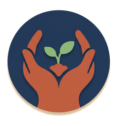
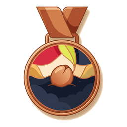
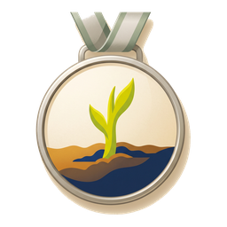

We ranked every word in millions of lines of real Korean conversation and teach them hardest-working first. Not chapter one of a textbook. The words people actually say.
시작하기 · Start with word one Free. No account. Nothing to lose.Korean, like every language, leans hard on a small set of words. Learn the fifty hardest-working ones and you already own 22% of the content words in everyday spoken Korean. Three hundred takes you to 37%. Most courses never show you this curve. We built the whole course around it.
Share of content words in everyday spoken Korean, by words learned
Measured on a multi-million-word corpus of spoken Korean, cross-checked against the National Institute of Korean Language's official learner list. The number the app shows you is this number — honest, and it only climbs.
Every card is one picture and one spoken word. No sentence appears until you know every word in it — so when sentences arrive, they're a reward, not a puzzle.
Tap the picture and hear the word — a different native-style voice on every tap, four in all. You learn the sound, not a spelling of the sound.
Say "I know this" and the card leaves the deck. There is no growing pile of review debt, no guilt meter — just a number that climbs and a stack that gets smaller.
From 씨앗 — a seed — at your first hundred, to the 무궁화 at 1,500. The ladder is our school's own class ladder, and everyone who earns a medal goes on the 명예의 전당, the Hall of Names — permanently. Nobody is ranked. Nobody is at the bottom. Getting there is the achievement.

···
··· ···